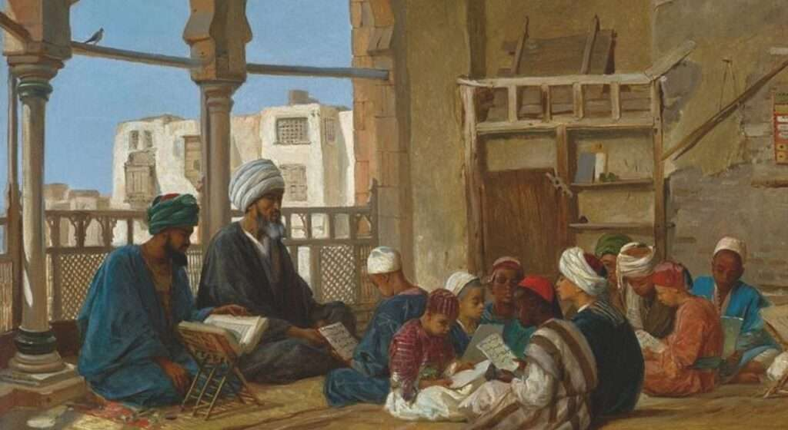
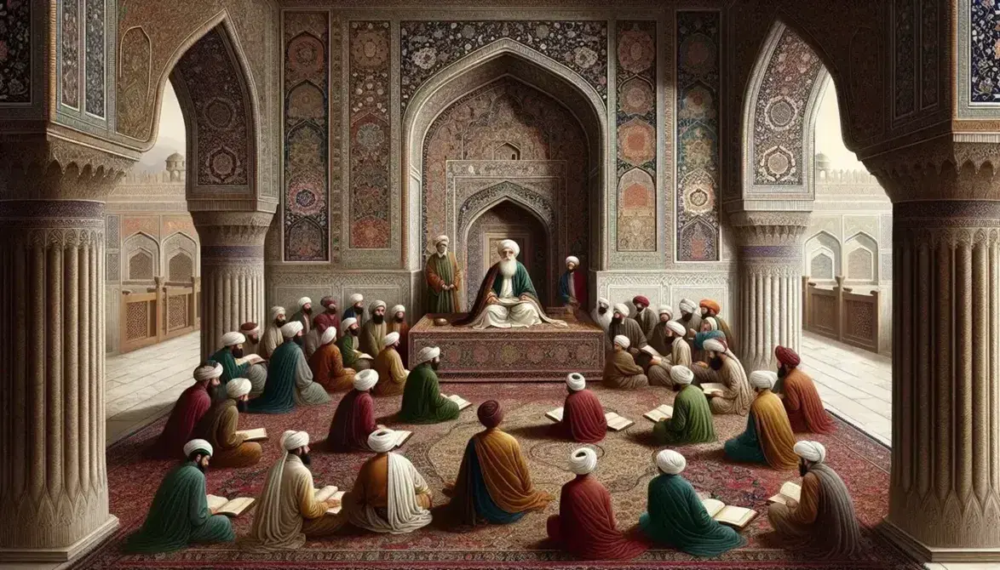
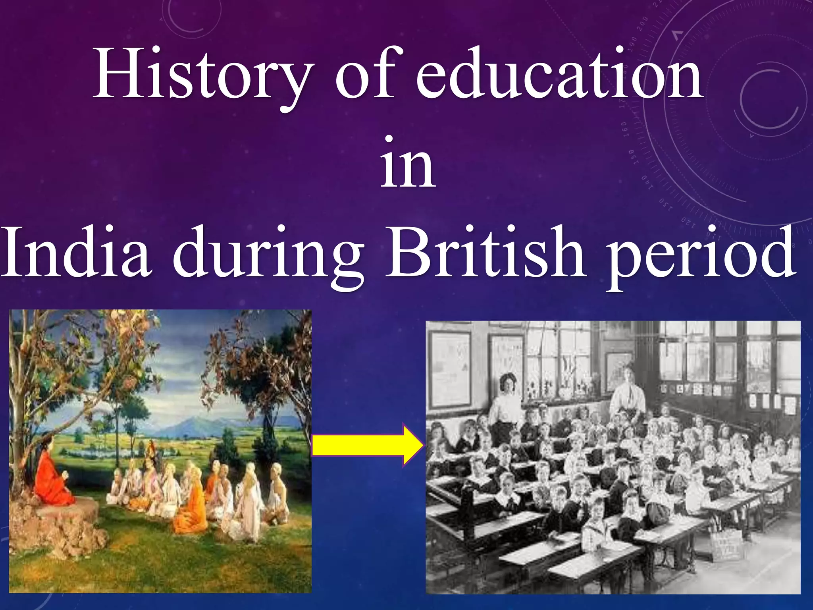
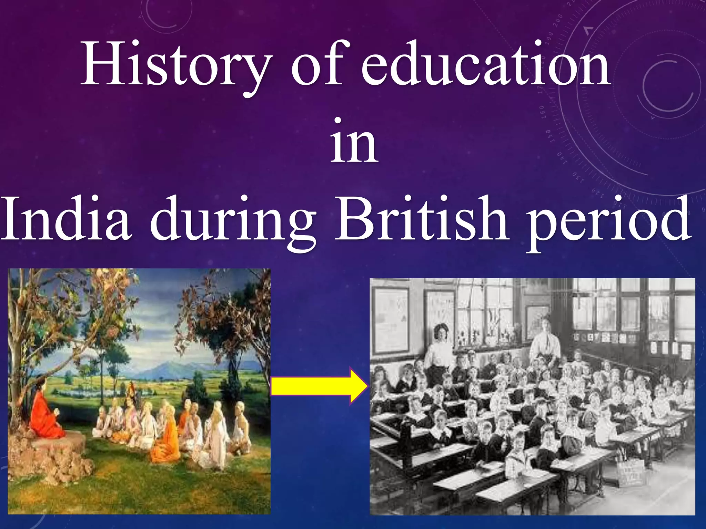
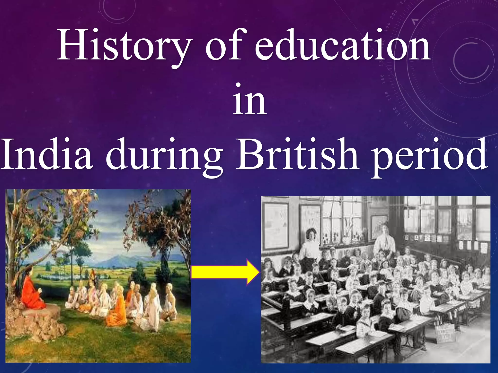
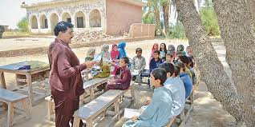
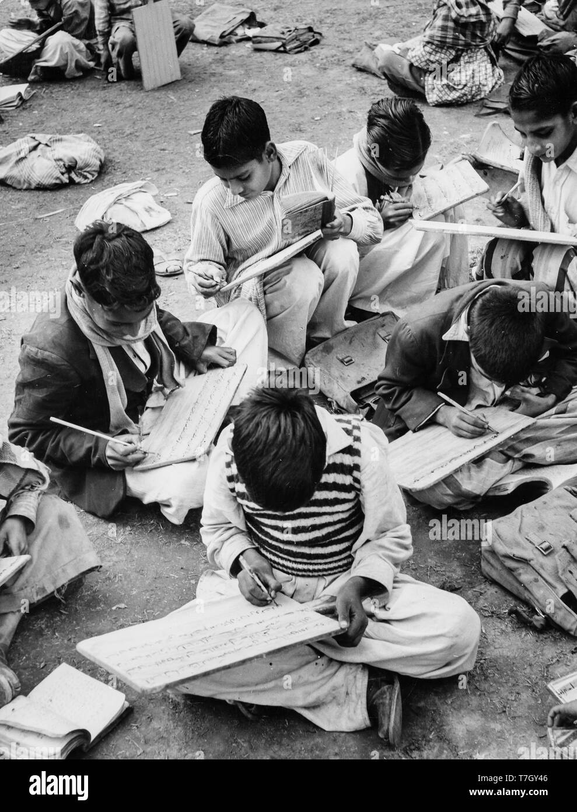
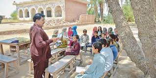
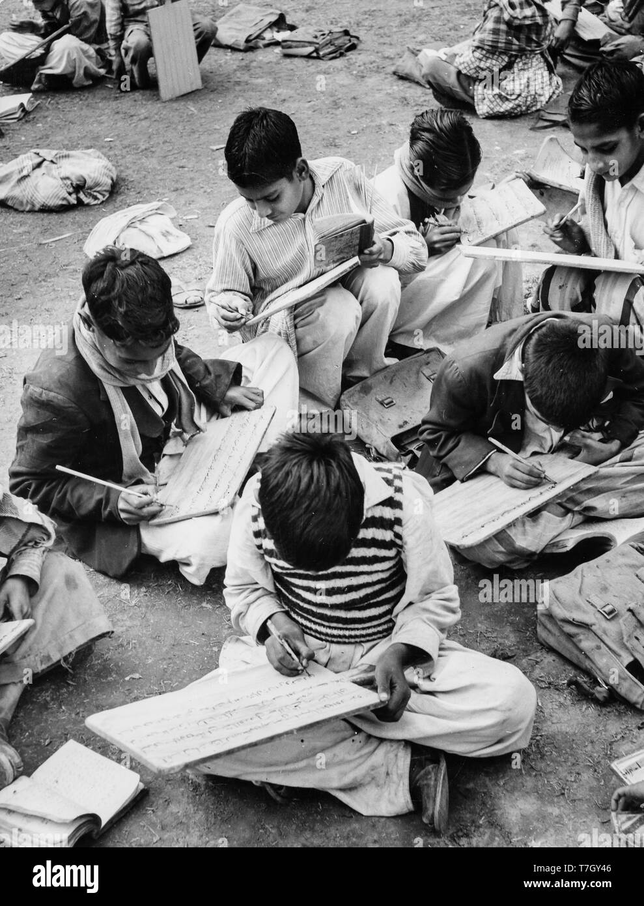

Pre‑Pakistan Education (712–1947)
Maktabs and Madrasahs were the main centers of education in the early Muslim period of the subcontinent. They provided instruction in the Qur’an, Arabic, Persian, mathematics, and basic sciences. Education was largely free and supported by rulers and wealthy individuals. During the Mughal era, education flourished with the establishment of organized institutions and a broader curriculum. Subjects such as literature, philosophy, medicine, and astronomy were also taught. Later, British rule introduced modern schooling with English as the medium of instruction and a more formal education system..


 


 


